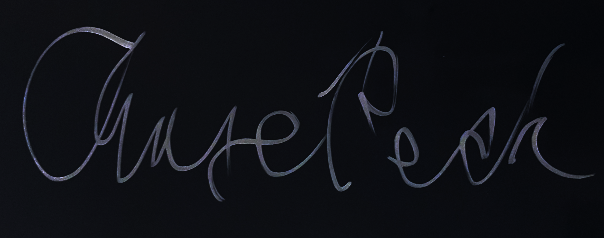

Ha Ha Ha Ha Ha Ha Ha Ha Ha Ha Ha Ha Ha.
- “No hypnosis like a mass hypnosis ’cause a mass hypnosis isn’t happening.” - They Might Be Giants, Lake Monsters
- “As our vehicle leaves the ground and plunges over the edge of the cliff toward the valley floor, I ponder whether it is possible that one might allege I am guilty of an act of moral failure, having failed to maintain a proper course along the roadway.” - Ithkuil on Wikipedia
- “...after peanut butter and chocolate, my favorite combination of two things is probably gross incompetence and high explosives.” - Sam O’Nella
- “the hardest thing about building a room is you have to build a room to build the damn room in first. it drives me crazy” - Bill Wurtz
- “If you want to really hurt your parents, and you don’t have the nerve to be gay, the least you can do is go into the arts.” - Kurt Vonnegut